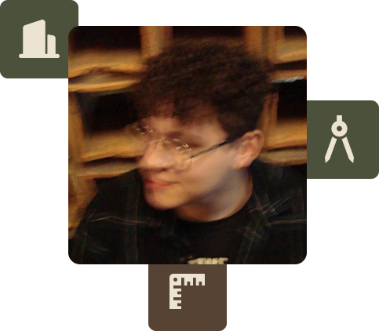

Quem é Taylor Guinsberg?
Desenvolvo projetos de interiores com foco em identidade e acolhimento. Meu processo começa na escuta e na conversa, porque antes de pensar em layout ou materialidade é essencial entender quem vai viver naquele espaço. Busco criar ambientes com presença, textura e narrativa, que revelem rotina, memória e personalidade nos detalhes.
Sou formado como Técnico em Edificações e atualmente estou no 7º período de Arquitetura e Urbanismo. Essa base técnica me dá segurança para pensar viabilidade, execução e detalhamento, enquanto minha abordagem mais intuitiva conduz as decisões estéticas e conceituais. Equilibro sensibilidade e técnica em todas as etapas do projeto.
Um bom interior não é apenas bonito. Ele precisa fazer sentido para quem vive ali e refletir sua essência.